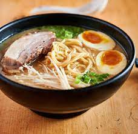

This soup is just very very good....you can find ramen noodles at most supermarkets, or at Asian grocery stores.
In a medium saucepan combine broth and noodles. Cover and bring to a boil over high heat; stir to break up noodles. Reduce heat to medium and add soy sauce, chili oil and ginger. Simmer, uncovered, for 10 minutes. Stir in sesame oil and garnish with green onions.
Return to main page